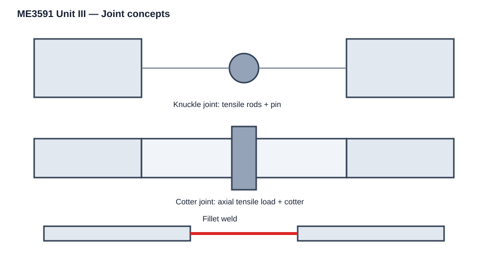
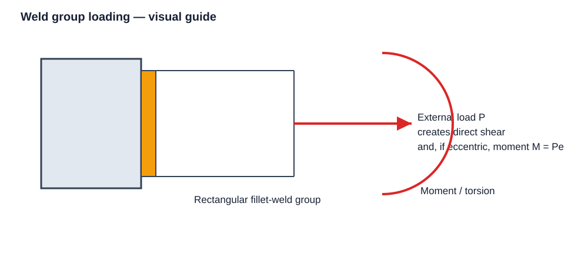

ACADRIX • Anna University R-2021 • Semester 5
Temporary joints can be dismantled without damaging the connected members. Examples include threaded and cottered joints.
Permanent joints are intended to remain assembled and generally require destruction or damage for separation. Welded, riveted and bonded joints are included here.

Threaded fasteners include bolts, screws, studs, nuts and related locking devices. Important design considerations are the load on the fastener, tensile stress, thread geometry, preload, tightening torque and the possibility of loosening.
For a single-start thread, lead equals pitch. For a multi-start thread, lead equals number of starts multiplied by pitch.
A bolted joint transfers the applied load through the bolt and connected members. The designer must check the bolt against tensile, shear and combined loading as applicable, and also consider preload and tightening.
Use the tensile-stress area of the threaded section when the critical section passes through the thread root.
If a load P acts at eccentricity e from the bolt-group centroid, the joint experiences a direct load plus a moment:
The direct component is shared according to the joint model, while the moment component produces unequal additional forces in the individual bolts. The bolt farthest from the centroid is normally critical.
Exam sequence: locate the bolt-group centroid → calculate direct load per bolt → calculate eccentric moment → determine additional bolt force from the moment → vectorially combine forces where required → design the critical bolt.
A knuckle joint connects two rods carrying mainly tensile load while allowing limited angular movement. Typical applications include tie rods and link mechanisms. The joint consists of a single eye, fork, knuckle pin and rod-end arrangement.
Dimensions are selected so that every specified failure mode remains within the allowable stress. Standard proportions should be taken from the prescribed design data book when the question asks for standard dimensions.
A cotter is a flat wedge-shaped piece fitted between two rods to transmit axial tensile or compressive load. Common forms include socket-and-spigot, sleeve-and-cotter and gib-and-cotter arrangements.
Design principle: Do not choose cotter dimensions from one equation only. Check every possible failure section and adopt dimensions satisfying all limits.
Welded joints are permanent joints produced by fusion or related welding processes. In this unit, the important design forms are butt welds, fillet welds and parallel/transverse fillet welds.
where s is the fillet weld size and t is the effective throat thickness.
The average direct shear stress is found from load divided by effective throat area.
For a group of welds subjected to eccentric loading, the load produces a moment M = Pe in addition to direct shear.

For bending, determine the weld-group section property about the relevant axis and calculate the bending stress. Combine it with direct shear according to the failure criterion specified in the problem.
For torsion, calculate the shear stress distribution over the weld group using the weld-group polar property. The most highly stressed point governs.
A butt weld joins two plates in approximately the same plane. The effective throat area is based on weld length and effective weld thickness. The design check is generally based on the permissible stress in the weld/parent system specified by the problem.
Riveted joints are permanent mechanical joints in which rivets clamp plates together. Important terms include pitch, margin, rivet diameter, back pitch, row and lap/butt arrangement.
Joint efficiency compares the strength of the joint with the strength of the unpunched plate.
Bonded joints use an adhesive layer to transfer load between surfaces. The joint design depends on adhesive strength, bonded area, surface preparation, joint geometry and the distribution of shear/peel stresses. The syllabus requires the theory of bonded joints rather than a separate detailed design procedure.
| Topic | What to prepare |
|---|---|
| Threaded fasteners | Terminology, thread starts/lead, basic fastener loading |
| Bolted joints | Direct loading and eccentric loading |
| Knuckle joint | Construction, proportions, all failure checks |
| Cotter joint | Types, construction, complete design/check sequence |
| Welded joints | Butt, fillet, transverse/parallel fillet, bending/torsion/eccentric loading |
| Riveted joints | Types, failure modes, strength and efficiency |
| Bonded joints | Basic theory and stress-transfer concept |
Write equations with proper symbols and fractions. Only the important governing formulas should be boxed in solved answers; intermediate working equations should remain normal. Final answers are not boxed.
Important: For standard dimensions of bolts, rivets, cotters, keys and other standard components, use the permitted PSG Design Data Book rather than memorising arbitrary values.
The Unit III scope is directly supported by the R-2021 syllabus and the course source stored in ACADRIX. fileciteturn160file0L31-L45 The prescribed textbooks are Bhandari 4th Edition and Shigley 10th Edition. fileciteturn160file8L452-L465 Bhandari's joint chapters cover cotter/knuckle joints, threaded joints and welded/riveted joints in the corresponding structure. citeturn1search0